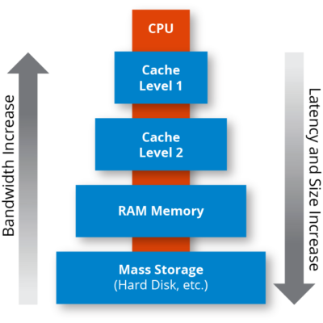

Memory
Что такое память
Кэш — это объем памяти, который находится внутри самого центрального процессора (ЦП), однако он также может быть интегрирован в отдельные ядра, либо разделен между некоторыми или всеми ядрами. Это небольшая часть выделенной памяти, которая находится непосредственно в этом маленьком устройстве, поэтому вашему процессору не нужно извлекать информацию из оперативной памяти вашей системы каждый раз, когда вы пользуетесь ПК.
Как она работает
Кэш имеет свою собственную иерархию или уровни, которые разделены на кэш L1, L2 и L3. Это все виды кэша, но они выполняют немного разные функции.

- Кэш L1 — это первый уровень, а также самый маленький, обычно разделенный на инструкции L1 или L1i и данные L1 или L1d. Каждое ядро ЦП имеет свой эксклюзивный фрагмент кэш-памяти L1, размер которого обычно составляет всего несколько килобайт. Тип данных, хранящихся в L1, — это то, что только что использовал процессор или собирается использовать в ближайшее время. Если ему нужны данные, которых нет в кэше L1, он переходит на следующий уровень: L2.
- Как и в случае с L1, кэш-память L2 часто предназначена только для одного ядра ЦП, но в некоторых процессорах она распределяется между несколькими ядрами, а это уже совсем другое дело. Например, каждое P-ядро в Core i9-12900K имеет 80 килобайт кэш-памяти L1, а также 1,25 мегабайта L2, что почти в 16 раз больше. Однако большой кэш приводит к более высокой задержке, а это означает, что для связи между ядром ЦП и кэшем требуется больше времени. Когда процессоры захотят выполнять задачи за микросекунды или даже наносекунды, немного более высокая задержка памяти в L2 сыграет свою роль. Если ЦП не может найти запрошенные данные в L2, он запрашивает их в следующем уровне — L3.
- Кэш L3 имеет большое значение: он распределяется между некоторыми или всеми ядрами ЦП, и он довольно объемный. Например, 12900K имеет 30 МБ кэш-памяти L3, что в 24 раза превышает объем L2. Задержка памяти в L3 даже хуже, чем в случае с L2, но его количество действительно важно, чтобы процессору не приходилось запрашивать необходимые данные в ОЗУ. За исключением хранилища, ОЗУ имеет наихудшую скорость и задержку в иерархии памяти, и всякий раз, когда ЦП требуется доступ к ОЗУ для необходимых данных, процесс останавливается. В идеале все важное должно храниться как минимум в кэше L3, чтобы предотвратить серьезные зависания.